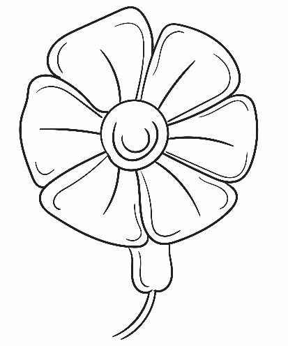
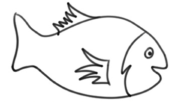
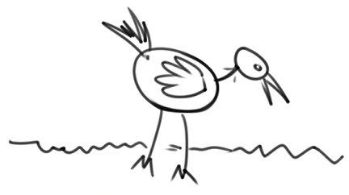
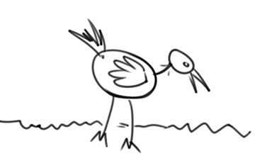
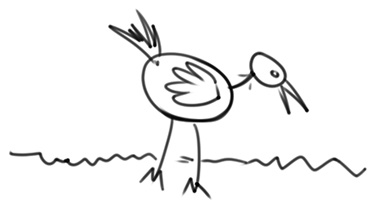

Simple decorative drawings of flowers
Flowers themselves are attractive. To create simple decorative drawings of flowers, the artist can draw various flowers and leaves. Figure 2.32 shows an example of a simple flower that an artist might use to make decorations.

Simple decorative drawings of fish, birds and animals
There are many simple images of fish, birds and animals which an artist can create and use as decorative items. These images can be used as they naturally appear based on the artist’s creativity. Figure 2.33, Figure 2.34 and Figure 2.35 show examples of fish, bird and animal images that can be used as decoration items respectively.



